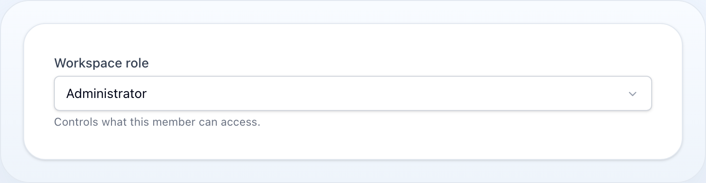

Forms
Select
Dropdown select with static or dynamic options, search, and multi-select.

On this page
Dropdown select with static or dynamic options, search, and multi-select.
use NyonCode\WireForms\Components\Select;Mobile. The dropdown/search panel opens as a bottom sheet below the configured breakpoint (searchable selects stay a floating panel by default so the search box stays usable). Override per field with
->sheetOnMobile()/->mobileBreakpoint('md')— see mobile presentation.
Basic Usage
Select::make('role') ->options([ 'admin' => 'Administrator', 'editor' => 'Editor', 'user' => 'User', ])Dynamic Options
Select::make('category_id') ->options(fn () => Category::pluck('name', 'id')->toArray()) ->placeholder('Choose category')Enum Options
Pass a PHP enum class directly instead of an array — the cases are expanded to a
value => label map. The key is the backing value (or the case name for unit enums),
and the label comes from the enum's getLabel() when it implements the
Foundation\Contracts\Enum\HasLabel contract, falling back to a headline of the case name.
use NyonCode\WireCore\Foundation\Contracts\Enum\HasLabel; enum Status: string implements HasLabel{ case Draft = 'draft'; case Published = 'published'; public function getLabel(): ?string { return match ($this) { self::Draft => 'Draft', self::Published => 'Published', }; }} Select::make('status')->options(Status::class)// → ['draft' => 'Draft', 'published' => 'Published']An enum without HasLabel still works — the case name is headlined for the label
(LowPriority → Low Priority). A closure returning an enum class is expanded too.
Automatic validation. A single-value Select (or Radio) whose options come
from an enum is automatically constrained to those values with an in: rule — a submission
outside the enum is rejected without you restating it. It is skipped for multiple() selects
(array state) and when you declare your own in: / Rule::in() / Rule::enum() rule.
The same
->options(Enum::class)shorthand works onRadio,CheckboxList, tableSelectColumn, and the tableSelectFilter.
Clearing a Selection
Picking the empty (placeholder) choice stores null, not an empty string —
which matters most against an enum-cast column, where '' is not a valid backing
value and the cast would throw on save:
Select::make('status') ->options(Status::class) // enum-cast column ->placeholder('No status') // choosing this stores nullMulti-selects are unaffected: their empty state is [], which an array cast
stores as it is.
Searchable
Select::make('user_id') ->options(fn () => User::pluck('name', 'id')->toArray()) ->searchable() ->noSearchResultsMessage('No users found') ->searchPrompt('Type to search...') ->loadingMessage('Loading...')Remote Search
Instead of filtering a preloaded list in the browser, resolve matches on the server as the user types:
Select::make('author_id') ->getSearchResultsUsing(fn (string $search) => User::where('name', 'like', "%{$search}%")->limit(50)->pluck('name', 'id')->all() ) ->getOptionLabelUsing(fn ($value) => User::find($value)?->name)getSearchResultsUsing()impliessearchable()and returns avalue => labelmap.getOptionLabelUsing()(single) /getOptionLabelsUsing()(multiple) resolve the label(s) for the current selection, so the trigger stays readable even when the chosen option was never preloaded.preload()eagerly seeds the remote list on render (runs the search callback with an empty term) instead of waiting for the first keystroke.
The host must expose the search endpoint — any WithForms component or a table
action modal does. A BelongsToSelect gets relationship-driven
remote search automatically.
Create & Edit Options
Let the user create a new option — or edit the selected one — from a modal without leaving the form:
Select::make('category_id') ->options(fn () => Category::pluck('name', 'id')->all()) ->createOptionForm([ TextInput::make('name')->required(), ]) ->createOptionUsing(fn (array $data) => Category::create($data)->getKey()) ->editOptionForm([ TextInput::make('name')->required(), ]) ->fillEditOptionUsing(fn ($value) => Category::find($value)->only('name')) ->updateOptionUsing(fn ($value, array $data) => Category::find($value)->update($data))A "+ Create" (and, for a selected value, "Edit") affordance appears in the combobox panel footer and opens an isolated modal. Validation keeps the modal open with errors; on success the new value is selected (appended for a multi-select).
createOptionUsing()returns the new option's value — a scalar key, or a model whose key is used.- Editing targets the single selected option, so it is unavailable on
multiple(). - Works in standalone
WithFormscomponents and inside table action modals. - So the newly created value renders a label, pair with
getOptionLabelUsing()or a preloaded option list. - The created/edited option is merged into the open combobox immediately (the host
dispatches
select-option-created/select-option-updatedbrowser events) — no page refresh needed.
A Full Form, Not A Field List
The option schema is an ordinary form schema and the mounted option form is a first-class form on the host, so the pieces that need the host to find a field by state path work inside it like anywhere else:
Select::make('category_id') ->createOptionForm([ Wizard::make('category')->schema([ Step::make('Basics')->schema([ TextInput::make('name')->required(), ]), Step::make('Placement')->schema([ Select::make('parent_id') ->getSearchResultsUsing(fn (string $search) => Category::where('name', 'like', "%{$search}%")->pluck('name', 'id')->all() ), ]), ]), ]) ->createOptionUsing(fn (array $data) => Category::create($data)->getKey())- A
Wizardgates each step: "Next" validates only that step's fields and stays put on failure, with the errors landing on the option bag (createOptionFormData.*) where the modal already shows them. - A nested
Selectreaches the remote-search endpoint, and field actions (suffixAction(),hintAction(),Button) resolve and run. - Opening a second option modal from inside an option form is refused, not nested: there is one mounted path and one data bag per kind, so honouring it would discard the form being filled in.
Add navigation(false)
to the wizard and the modal footer takes over its navigation — Back and Next
next to Cancel, with the submit button appearing only on the last step, instead of
a second navigation row inside the panel. Name the wizard when both option modals
can be open at once: the footer and the wizard find each other by that name.
Configuring The Option Modal
Neither option modal is a special case: both are configured through the same
Modal object the action modals use, so heading, description, icon, width, close
behaviour, sticky chrome and the two button labels all live in one place.
use NyonCode\WireCore\Modals\Modal; Select::make('category_id') ->options(fn () => Category::pluck('name', 'id')->all()) ->createOptionForm([TextInput::make('name')->required()]) ->createOptionUsing(fn (array $data) => Category::create($data)->getKey()) ->createOptionModal(fn (Modal $modal) => $modal ->heading('New category') ->description('It becomes selectable as soon as you save it.') ->icon('outline:folder-plus') ->width('2xl') ->closeOnClickAway(false) ->stickyFooter() ->submitLabel('Create category') ->cancelLabel('Discard')) ->editOptionModal(fn (Modal $modal) => $modal->width('xl'))The callback configures the modal in place; returning a Modal replaces it
wholesale. It runs when the schema is defined, not once per render, so text that
depends on state goes through the config's own closure support —
$modal->heading(fn (Select $field) => …), evaluated with the field as context.
createOptionModalHeading() / createOptionModalWidth() and their editOption…
twins remain as shorthands and write into that same object, so the two ways of
setting a heading cannot drift apart. Width takes a ModalWidth case or its token
(sm…7xl, full); an unknown token falls back to md, and an unconfigured
modal follows wire-core.modals.default_width like every other modal.
The modal's id, wire:model and close action are deliberately not
configurable. They key the teleport Livewire morphs by, and both option modals can
be mounted at once — a caller-set id would let their contents swap.
Reactivity
The combobox binds deferred by default. Add live() when other fields react to the
selection — afterStateUpdated(), a sibling's visibleWhen(), or Form::live() —
so picking an option syncs to the server on click instead of waiting for the next
roundtrip:
Select::make('type') ->options([...]) ->live() ->afterStateUpdated(fn ($state, $set) => $set('label', ucfirst((string) $state)))Multi-Select
Select::make('tags') ->multiple() ->maxItems(5) ->minItems(1) ->options([...])Relationship
Select::make('author_id') ->relationship('author', 'name') ->searchable()Native vs Custom
Every Select renders through the custom combobox by default, so searchable and
non-searchable selects share one design — searchable() simply adds
the in-panel search input. Use native() to opt into the browser-native
<select> element instead.
Select::make('country') ->searchable() // combobox with a search input ->native() // force the browser-native <select> insteadBoolean Select
Select::make('active') ->boolean() // Yes/No optionsDisabled Options
Render specific options as non-selectable:
Select::make('status') ->options([ 'draft' => 'Draft', 'review' => 'In Review', 'published' => 'Published', 'archived' => 'Archived', ]) ->disabledOptions(['archived'])Dynamic disabled options:
Select::make('tier') ->options(Plan::pluck('name', 'id')->toArray()) ->disabledOptions(fn () => Plan::unavailable()->pluck('id')->toArray())Methods
| Method | Type | Description |
|---|---|---|
options(array|string|Closure) |
array | Static, dynamic, or enum-class options (value => label) |
searchable() |
bool | Enable option search |
multiple() |
bool | Allow multiple selections |
native(bool $native = true) |
bool | Use the browser-native <select> instead of the combobox (default: false) |
maxItems(int|null) |
int | Maximum selected items (multi-select) |
minItems(int|null) |
int | Minimum selected items (multi-select) |
disabledOptions(array|Closure) |
array | Option keys that are rendered as disabled |
noSearchResultsMessage(string|null) |
string | Message when search finds nothing |
loadingMessage(string|null) |
string | Message while options are loading |
searchPrompt(string|null) |
string | Prompt shown in the search box |
boolean() |
— | Shorthand for Yes/No options |
relationship(string, string) |
— | Load options from a relationship |
getSearchResultsUsing(Closure) |
— | Remote search: resolve matches on the server (implies searchable()) |
getOptionLabelUsing(Closure) / getOptionLabelsUsing(Closure) |
— | Resolve label(s) for the current selection |
preload() |
bool | Eagerly seed the remote option list on render |
createOptionForm(array|Closure) / createOptionUsing(Closure) |
— | Create a new option from a modal |
editOptionForm(array|Closure) / fillEditOptionUsing(Closure) / updateOptionUsing(Closure) |
— | Edit the selected option from a modal |
createOptionModal(Closure) / editOptionModal(Closure) |
— | Configure the option modal through the canonical Modal object |
createOptionModalHeading(string) / editOptionModalHeading(string) |
string | Modal headings (shorthand) |
createOptionModalWidth(string|ModalWidth|null) / editOptionModalWidth(string|ModalWidth|null) |
string | Modal widths (sm…7xl, full; default md) (shorthand) |
placeholder(string|Closure) |
string | Empty/blank option label |
disabled(bool|Closure) |
bool | Disable the select |
required() |
— | Mark as required |
live() |
— | Trigger Livewire update on change |
See Common Field API for label, hint, tooltip, and other shared methods.